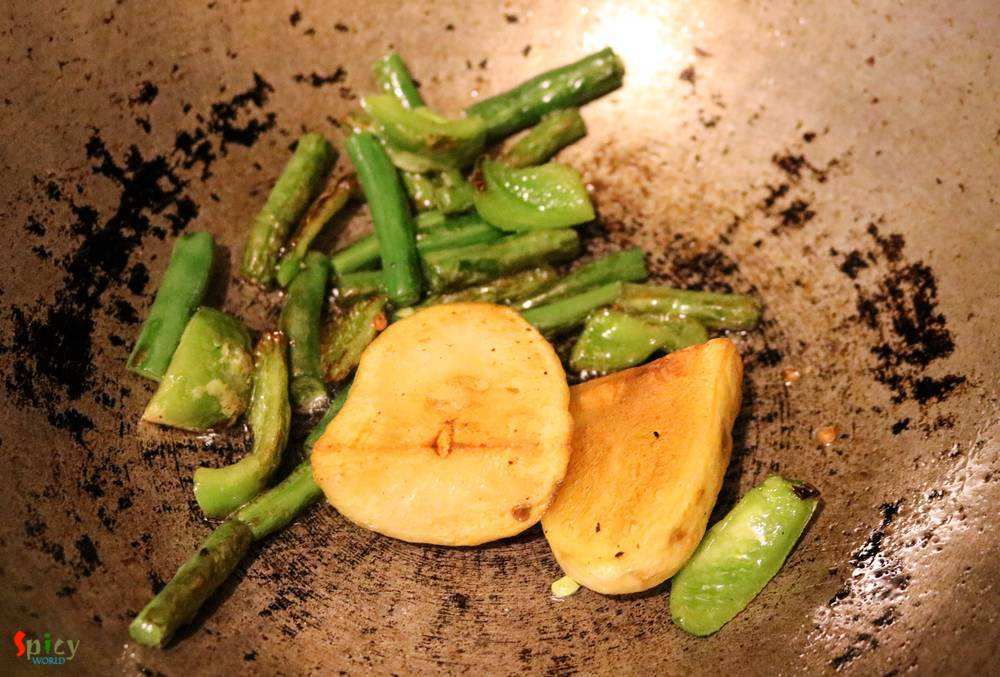
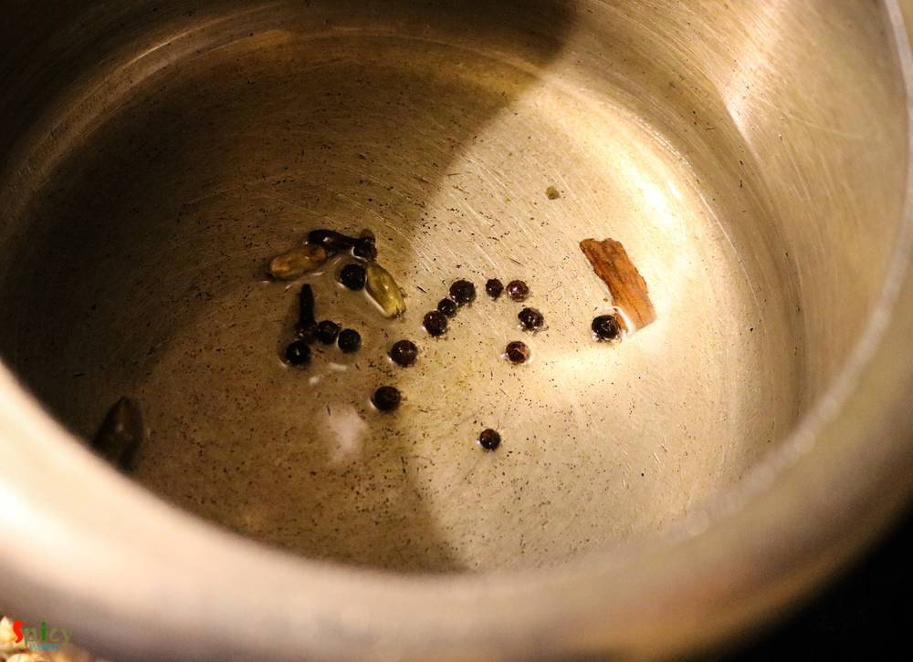
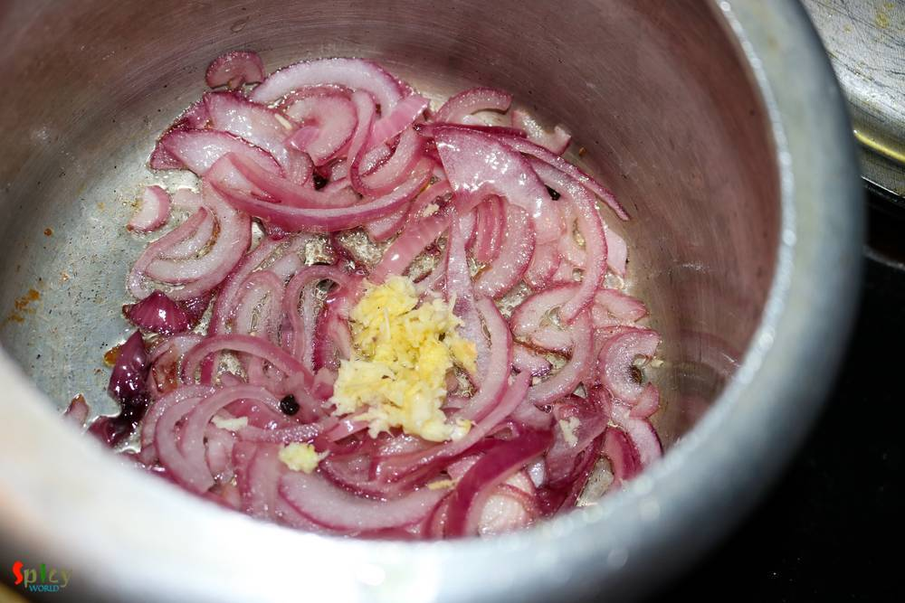
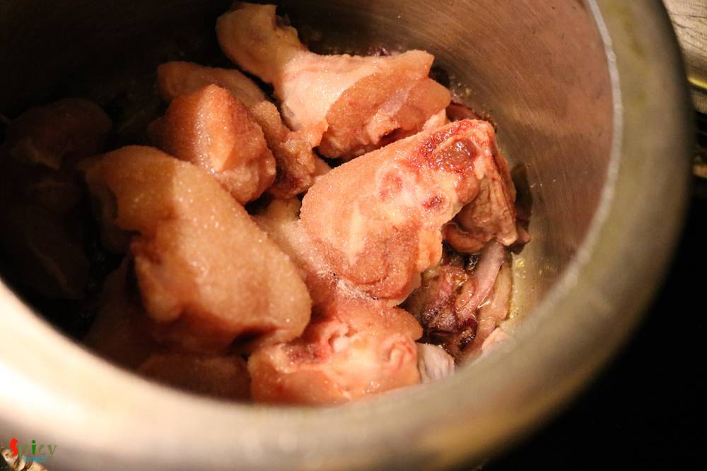
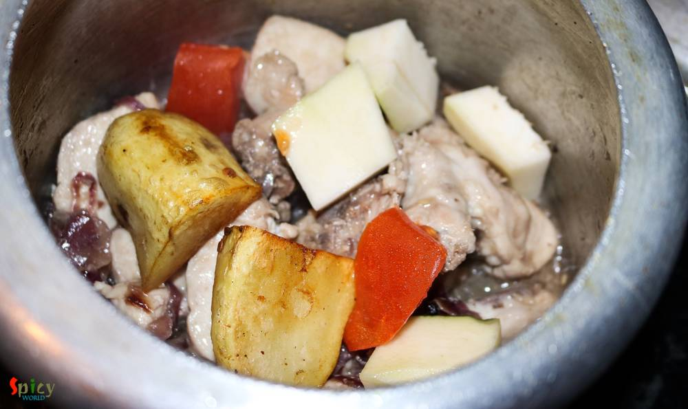
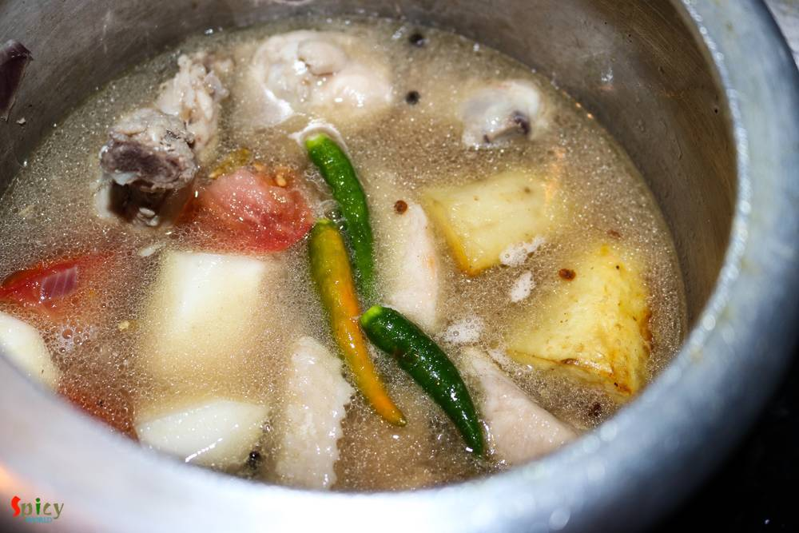
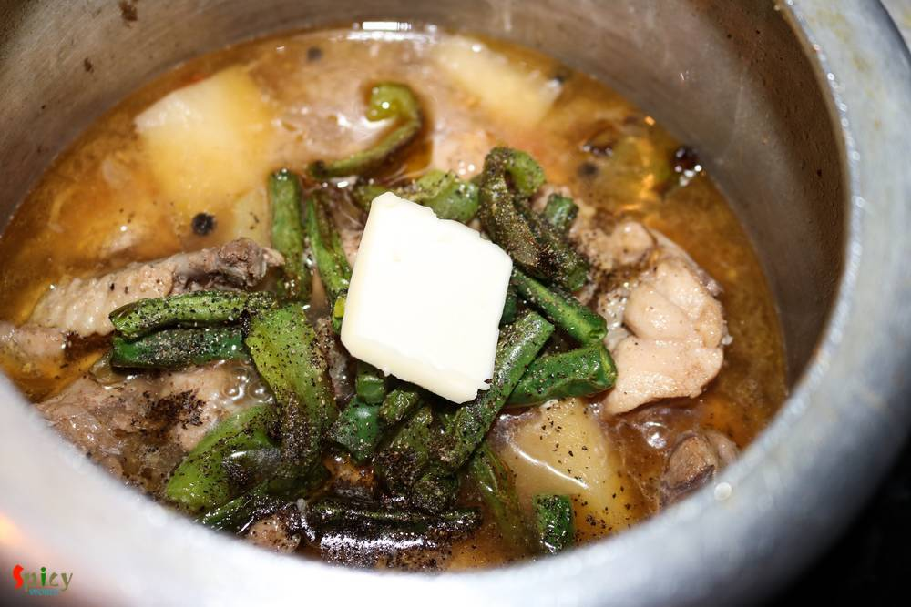

Simple and Easy Recipes
Bengali Chicken Stew
© 2016 Spicy World, Published on: Jul 22, 2016
During monsoon or winter or whenever you are down with cold and flu, this 'chicken stew' is the perfect dish to bring back the taste of your tastebuds. I am sure lots of Bengalis will relate to this dish. The slight heat from black pepper and saltiness of butter is the main attraction of this item. This stew is very healthy and home style as you can add many veggies of your choice. The recipe is super easy and I hope you will give it a try.

Ingredients
- Half kg Chicken with bones.
- 1 onion, thinly sliced.
- 1 Teaspoon of fresh ginger and garlic paste.
- Half of a tomato, chopped.
- Vegetables (1 small potato, 6 pieces of raw papaya, sliced green beans, sliced bell peppers, sliced carrots etc).
- Salt and Pepper powder.
- A cube of butter.
- 3 Tablespoons of oil.
- Whole spices (6 black peppercorns, 2 green cardamom, 3 cloves, 1 very small cinnamon stick).
- Water.
- 2 green chilies.
- Some chopped green onions or coriander leaves.


Steps
Heat a Tablespoon of oil in a pan.
Add all the veggies. Mix and fry for 7 minutes. Then turn off the heat.
Now heat the remaining oil in a pressure cooker.
Saute all the whole spices for few seconds.
Add the sliced onion with pinch of salt. Fry for 5 minutes.

Then add the ginger and garlic paste. Mix well for 3 minutes.
Add the chicken pieces with some more salt. Mix well and cook for 5 minutes.
Then add the half fried potatoes, carrots, papaya and chopped tomato. Mix well.
Add 1 and half cups of water, green chilies and salt. Mix well and cook until the chicken becomes fully soft.
After that add rest of the fried veggies, a Teaspoon of pepper powder and the butter. Simmer for 5 minutes, then turn off the heat.
Add some chopped green onions or coriander leaves and a dollop of butter before serving.
Your bengali chicken stew is ready ...
Serve this hot with toasted bread or plain rotis ...
")